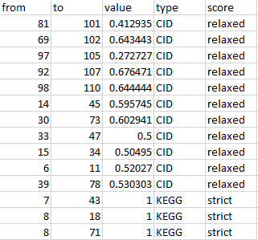
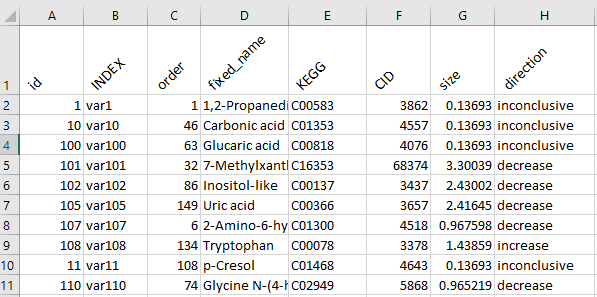
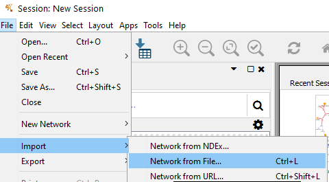
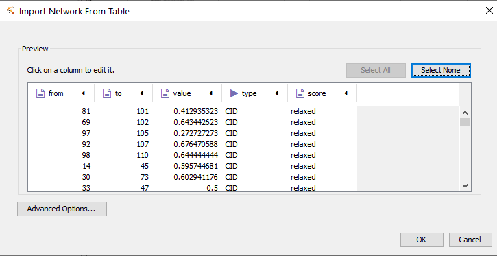
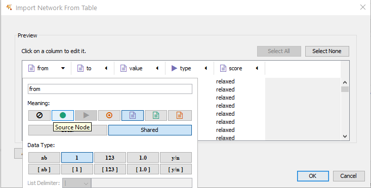
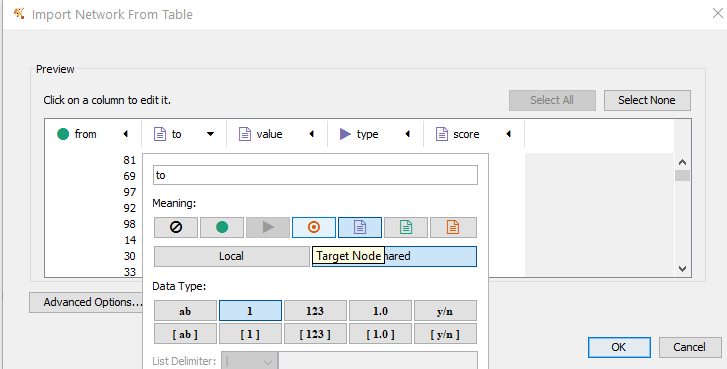
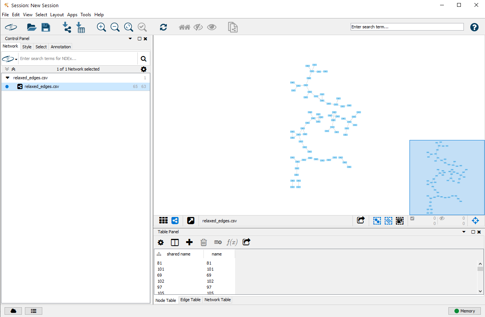
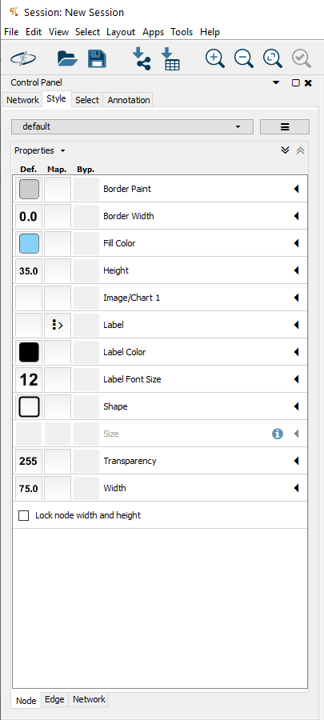

Publication quality networks
Creating networks in Cystoscape
The following example shows how to use Cytoscape (v3.7.2) to create publication ready networks from assets calculated in DAVe. This example will use two components the edge_list and the node_data files.
Data
edge_list.csv

node_data.csv

Upload
Edge list
First step is to load the edge_list.
In cytoscape select File >> Import >> network from File Upload and then select the edge_list.csv file.

Set from and to columns

from set to Source Node

to set to Target Node

Select OK once the source and target columns are identified.
Overview network

Node attributes
Next load the node _data. Select File >> Import >> Table from File

Select the ID column as the variable Key

Define mappings
The uploaded node attributes should now be available to edit the network node and edge visual properties.

Specify the node and edge visual properties.
